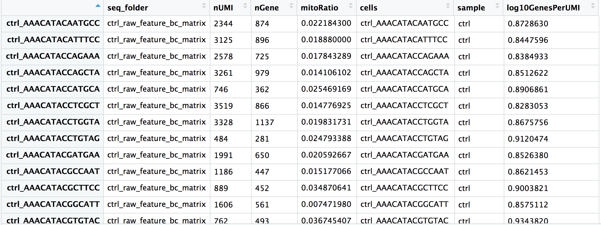
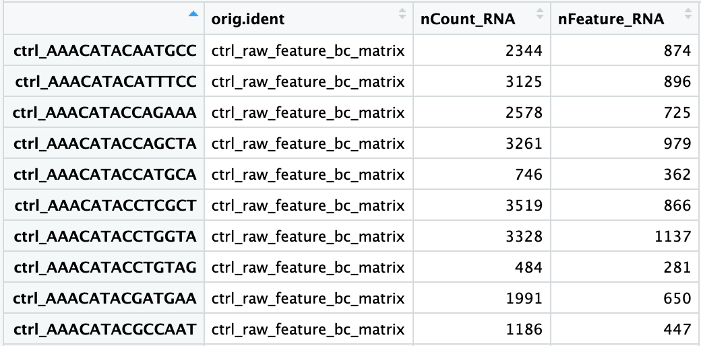

The AnnData Object Explained
The single data structure that holds your entire single-cell experiment
Jubayer Hossain ![]()
By the end of this tutorial you will be able to:
- Explain why AnnData exists and what coordination problem it solves
- Describe every component of an AnnData object:
.X,.obs,.var,.obsm,.obsp,.layers,.uns - Load a real 10x count matrix from a CSV.gz file into AnnData
- Add and manipulate cell metadata in
.obs - Concatenate 12 samples into a single merged AnnData with batch labels
- Index and slice an AnnData object by cells or genes
- Understand the view vs copy distinction and why it matters
- Save and reload AnnData checkpoints with
.h5ad
Estimated time: 30–40 minutes Prerequisites: Tutorial #2 — Setting Up Your Python Environment Data: tutorials/scpy/data/ — 12 × *_count_matrix.csv.gz
1. The Problem AnnData Solves
Before AnnData, a typical single-cell analysis looked like this:
# The old, fragile way
count_matrix = np.load("counts.npy") # shape: (9413, 33538)
cell_barcodes = pd.read_csv("barcodes.csv") # shape: (9413,)
gene_names = pd.read_csv("genes.csv") # shape: (33538,)
pca_coords = np.load("pca.npy") # shape: (9413, 50)
cell_types = pd.read_csv("labels.csv") # shape: (9413,)Everything is a separate variable. There is nothing stopping your cell_types DataFrame from drifting out of sync with your count_matrix after a filtering step. Sort one, forget to sort the others — and your cell type labels silently swap to the wrong cells. This happens.
AnnData is a single container that keeps your count matrix and every piece of associated metadata together, indexed by the same cell and gene names. Subsetting the matrix automatically subsets the metadata. Adding a column to .obs is permanently attached to the cells it describes. There is no drift.
import anndata as ad
# Everything in one object
adata # AnnData: 9413 cells × 33538 genes
adata.X # The count matrix — always in sync
adata.obs # Cell metadata DataFrame — same row order as .X
adata.var # Gene metadata DataFrame — same row order as .X columns
adata.obsm["X_pca"] # PCA embedding — same number of rows as .XFilter 1,000 low-quality cells and every component updates together:
adata = adata[adata.obs["n_genes"] > 500, :]
# Now: 8413 cells × 33538 genes — obs, var, obsm all shrunk consistently2. The Full Anatomy of AnnData
┌──────────────────────────────────────────────────────────────────────────┐
│ AnnData (n_obs × n_vars) │
│ │
│ var_names ──► Gene1 Gene2 Gene3 Gene4 ... GeneM │
│ ┌───────────────────────────────────────────┐ │
│ obs_names │ │ ◄── .X │
│ Cell_1 ──► │ 3 0 1 0 ... 0 │ (sparse │
│ Cell_2 ──► │ 0 2 0 5 ... 0 │ matrix, │
│ Cell_3 ──► │ 0 0 0 0 ... 7 │ cells × │
│ ... ──► │ . . . . ... . │ genes) │
│ Cell_N ──► │ 0 1 3 0 ... 2 │ │
│ └───────────────────────────────────────────┘ │
│ │
│ .obs (n_obs × any) .var (n_vars × any) │
│ ┌──────────────────┐ ┌─────────────────────────┐ │
│ │ condition donor │ │ gene_ids n_cells hvg │ │
│ │ "Ctrl" 1 │ │ ENSG... 4821 True │ │
│ │ "Ctrl" 1 │ │ ENSG... 312 False │ │
│ │ ... . │ │ ... ... ... │ │
│ └──────────────────┘ └─────────────────────────┘ │
│ │
│ .obsm {"X_pca": (N,50), "X_umap": (N,2)} ◄── per-cell embeddings │
│ .obsp {"connectivities": sparse(N,N)} ◄── cell-cell distances │
│ .varm {"PCs": (M,50)} ◄── per-gene loadings │
│ .layers {"counts": sparse, "log1p": sparse} ◄── extra matrices │
│ .uns {"neighbors": {}, "leiden": {}, ...} ◄── free-form metadata │
└──────────────────────────────────────────────────────────────────────────┘| Component | Type | Holds |
|---|---|---|
.X |
sparse matrix (n_obs, n_vars) |
Current expression matrix (raw counts or normalised) |
.obs |
pd.DataFrame (n_obs, *) |
Cell-level metadata: condition, QC metrics, cluster labels |
.var |
pd.DataFrame (n_vars, *) |
Gene-level metadata: gene IDs, detection rates, HVG flag |
.obsm |
dict of arrays (n_obs, k) |
Per-cell embeddings: PCA, UMAP, diffusion map |
.obsp |
dict of sparse (n_obs, n_obs) |
Cell–cell graphs: kNN connectivities, distances |
.varm |
dict of arrays (n_vars, k) |
Per-gene embeddings: PCA loadings |
.layers |
dict of matrices (n_obs, n_vars) |
Additional expression matrices: raw, normalised, log1p |
.uns |
dict |
Unstructured: algorithm parameters, colour palettes, cluster trees |
3. Building AnnData from Scratch
Before working with real data, build a tiny AnnData by hand. This is the fastest way to understand each component.
import numpy as np
import pandas as pd
import scipy.sparse as sp
import anndata as ad
# ── Step 1: the count matrix ──────────────────────────────────────────────────
# 5 cells, 4 genes — small enough to inspect by eye
counts = np.array([
[3, 0, 1, 0], # Cell A
[0, 2, 0, 5], # Cell B
[0, 0, 0, 7], # Cell C
[1, 3, 2, 0], # Cell D
[0, 0, 4, 1], # Cell E
], dtype=np.int32)
# ── Step 2: metadata ─────────────────────────────────────────────────────────
cell_meta = pd.DataFrame({
"condition": ["Ctrl", "Ctrl", "Pre", "Pre", "Post"],
"donor": [1, 1, 1, 1, 1],
}, index=["CellA", "CellB", "CellC", "CellD", "CellE"])
gene_meta = pd.DataFrame({
"gene_id": ["ENSG001", "ENSG002", "ENSG003", "ENSG004"],
"chromosome": ["chr1", "chr2", "chrX", "chrMT"],
}, index=["CD3D", "CD19", "XIST", "MT-CO1"])
# ── Step 3: assemble ─────────────────────────────────────────────────────────
adata = ad.AnnData(
X = sp.csr_matrix(counts), # store as sparse — always do this
obs = cell_meta,
var = gene_meta,
)
print(adata)AnnData object with n_obs × n_vars = 5 × 4
obs: 'condition', 'donor'
var: 'gene_id', 'chromosome'The one-line print is your dashboard. It tells you dimensions and what metadata exists. Let us explore each component.
# ── .X — the expression matrix ───────────────────────────────────────────────
print(type(adata.X)) # <class 'scipy.sparse._csr.csr_matrix'>
print(adata.X.toarray()) # Dense view (only for small data!)
# [[3 0 1 0]
# [0 2 0 5]
# [0 0 0 7]
# [1 3 2 0]
# [0 0 4 1]]
# ── .obs — cell metadata ──────────────────────────────────────────────────────
print(adata.obs)
# condition donor
# CellA Ctrl 1
# CellB Ctrl 1
# CellC Pre 1
# CellD Pre 1
# CellE Post 1
# ── .var — gene metadata ──────────────────────────────────────────────────────
print(adata.var)
# gene_id chromosome
# CD3D ENSG001 chr1
# CD19 ENSG002 chr2
# XIST ENSG003 chrX
# MT-CO1 ENSG004 chrMT
# ── obs_names and var_names ───────────────────────────────────────────────────
print(adata.obs_names.tolist()) # ['CellA', 'CellB', 'CellC', 'CellD', 'CellE']
print(adata.var_names.tolist()) # ['CD3D', 'CD19', 'XIST', 'MT-CO1']
# ── Shape convenience ─────────────────────────────────────────────────────────
print(adata.n_obs, adata.n_vars) # 5 4Adding to .uns
.uns (unstructured) is a plain Python dictionary. Store anything that belongs to the experiment but does not fit the matrix structure — algorithm parameters, colour palettes, log entries.
adata.uns["experiment"] = {
"platform": "10x Chromium",
"organism": "Homo sapiens",
"tissue": "PBMC",
"date": "2021-06-15",
}
adata.uns["scanpy_version"] = "1.10.3"
print(adata)
# AnnData object with n_obs × n_vars = 5 × 4
# obs: 'condition', 'donor'
# var: 'gene_id', 'chromosome'
# uns: 'experiment', 'scanpy_version'4. Loading Our Real Dataset
Our data lives in data/ as 12 compressed CSV files. Each file has genes as rows and cells as columns — the convention in most count matrix exports. AnnData requires the opposite: cells as rows, genes as columns. The transposition is the one step you cannot forget.
import pandas as pd
import scipy.sparse as sp
import anndata as ad
# ── Load one sample ───────────────────────────────────────────────────────────
filepath = "data/GSM5320459_Ctrl1_count_matrix.csv.gz"
df = pd.read_csv(filepath, index_col=0)
print("Raw file shape (genes × cells):", df.shape)
# Raw file shape (genes × cells): (33538, 9413)
print("First 3 gene names:", df.index[:3].tolist())
# ['MIR1302-2HG', 'FAM138A', 'OR4F5']
print("First 3 cell barcodes:", df.columns[:3].tolist())
# ['AAACCCACAAGCGATG-1', 'AAACCCACACTCCACT-1', 'AAACCCAGTATAGGAT-1']Now transpose and wrap in AnnData:
# Transpose: genes×cells → cells×genes
# Then convert to CSR sparse matrix to save memory
X = sp.csr_matrix(df.T.values)
adata = ad.AnnData(X=X)
adata.obs_names = df.columns.tolist() # cell barcodes as row labels
adata.var_names = df.index.tolist() # gene names as column labels
print(adata)
# AnnData object with n_obs × n_vars = 9413 × 33538A dense 9,413 × 33,538 float64 matrix requires ~2.5 GB of RAM. The same matrix stored as scipy.sparse.csr_matrix (compressed sparse row), given 94.6% sparsity, occupies ~140 MB — an 18× reduction. Always convert with sp.csr_matrix(...) when creating an AnnData from a dense array or DataFrame. Scanpy will raise a warning if you pass a dense matrix to functions expecting sparse input.
# Dense — do NOT do this for real data
adata = ad.AnnData(X=df.T.values) # 2.5 GB per sample
# Sparse — always do this
adata = ad.AnnData(X=sp.csr_matrix(df.T.values)) # 140 MB per sampleInspecting the loaded object
print(f"Cells : {adata.n_obs:,}")
print(f"Genes : {adata.n_vars:,}")
print(f"Sparsity: {1 - adata.X.nnz / (adata.n_obs * adata.n_vars):.1%}")
# Cells : 9,413
# Genes : 33,538
# Sparsity: 94.6%
# Total UMIs per cell (sum across genes)
import numpy as np
total_counts = np.array(adata.X.sum(axis=1)).flatten()
print(f"Median UMIs/cell : {np.median(total_counts):,.0f}")
print(f"Mean UMIs/cell : {np.mean(total_counts):,.0f}")
# Median UMIs/cell : 5,569
# Mean UMIs/cell : 6,3425. Working with .obs — Cell Metadata
.obs is a pandas DataFrame where each row is a cell. It starts empty (only the index, i.e. the barcodes). You populate it as the analysis progresses.
# The obs DataFrame starts with just the index
print(adata.obs.head(3))
# (empty — no columns yet)
# AAACCCACAAGCGATG-1
# AAACCCACACTCCACT-1
# AAACCCAGTATAGGAT-1
# ── Add sample-level metadata ─────────────────────────────────────────────────
adata.obs["sample_id"] = "GSM5320459"
adata.obs["condition"] = "Ctrl"
adata.obs["donor"] = 1
adata.obs["sample"] = "Ctrl1"
print(adata.obs.head(3))
# sample_id condition donor sample
# AAACCCACAAGCGATG-1 GSM5320459 Ctrl 1 Ctrl1
# AAACCCACACTCCACT-1 GSM5320459 Ctrl 1 Ctrl1
# AAACCCAGTATAGGAT-1 GSM5320459 Ctrl 1 Ctrl1Computing per-cell summary statistics
Scanpy provides a convenience function sc.pp.calculate_qc_metrics() to compute standard QC columns (we cover this fully in Tutorial #4). For now, let us compute the basics manually to see how .obs gets populated:
import scanpy as sc
import numpy as np
# Total UMI counts per cell
adata.obs["total_counts"] = np.array(adata.X.sum(axis=1)).flatten()
# Number of genes detected (non-zero entries per row)
adata.obs["n_genes_by_counts"] = np.array((adata.X > 0).sum(axis=1)).flatten()
# Flag mitochondrial genes
adata.var["mt"] = adata.var_names.str.startswith("MT-")
# Mitochondrial UMI fraction per cell
mt_mask = adata.var["mt"].values
mt_counts = np.array(adata.X[:, mt_mask].sum(axis=1)).flatten()
adata.obs["pct_counts_mt"] = mt_counts / adata.obs["total_counts"] * 100
print(adata.obs[["total_counts", "n_genes_by_counts", "pct_counts_mt"]].describe().round(2)) total_counts n_genes_by_counts pct_counts_mt
count 9413.00 9413.00 9413.00
mean 6342.18 1812.34 3.87
std 4891.23 752.61 3.12
min 500.00 201.00 0.00
25% 3102.00 1201.00 1.82
50% 5569.00 1812.00 3.14
75% 8214.00 2389.00 5.21
max 98432.00 9102.00 49.63This is what a populated .obs looks like — a table of per-cell measurements that grows throughout the analysis pipeline:

.obs. Adapted from HBC Training Materials.6. Working with .var — Gene Metadata
.var works exactly like .obs but for genes. It accumulates gene-level properties as the analysis progresses.
print(adata.var.head(5))
# mt
# MIR1302-2HG False
# FAM138A False
# OR4F5 False
# AL627309.1 False
# AL627309.3 False
# ── Number of cells expressing each gene ─────────────────────────────────────
adata.var["n_cells_by_counts"] = np.array((adata.X > 0).sum(axis=0)).flatten()
# ── Mean expression across all cells ─────────────────────────────────────────
adata.var["mean_counts"] = np.array(adata.X.mean(axis=0)).flatten()
print(adata.var[["n_cells_by_counts", "mean_counts"]].sort_values(
"n_cells_by_counts", ascending=False
).head(8))
# n_cells_by_counts mean_counts
# MALAT1 9389 412.3
# B2M 9301 189.6
# FTL 9287 204.1
# FTH1 9251 176.8
# ACTB 9198 89.2
# S100A9 9102 143.7
# LYZ 9088 156.4
# S100A8 9041 131.9.var Will Contain by Tutorial #6
By the end of Tutorial #6 (Normalisation & Feature Selection), your .var DataFrame will contain many new columns added automatically by scanpy:
| Column | Added by | Meaning |
|---|---|---|
mt |
You | Boolean: is this a mitochondrial gene? |
n_cells_by_counts |
sc.pp.calculate_qc_metrics |
Cells expressing this gene |
highly_variable |
sc.pp.highly_variable_genes |
Selected for downstream analysis |
means |
sc.pp.highly_variable_genes |
Mean expression |
dispersions_norm |
sc.pp.highly_variable_genes |
Normalised dispersion (variance) |
Everything stays in .var — one DataFrame, always aligned to your genes.
7. Layers — Storing Multiple Expression Matrices
.layers is a dictionary of matrices, each the same shape as .X (n_obs × n_vars). It is designed for exactly one workflow pattern: preserve raw counts while working with normalised values.
# ── Save raw counts BEFORE any normalisation ──────────────────────────────────
# This is the single most important best practice in the pipeline.
adata.layers["counts"] = adata.X.copy()
# Later in the pipeline: normalise and log-transform .X
sc.pp.normalize_total(adata, target_sum=1e4)
sc.pp.log1p(adata)
# Now .X holds log-normalised values, but raw counts are safe in .layers
print("log-normalised .X, first cell, first gene:", adata.X[0, 0])
print("raw counts in layer, same entry: ", adata.layers["counts"][0, 0])The very first thing you should do after loading data is:
adata.layers["counts"] = adata.X.copy()Several downstream tools (notably scvi-tools, DESeq2 via PyDESeq2, and compositional analysis methods) require raw integer counts as input, not log-normalised values. If you normalise .X and forget to save the original counts, you cannot recover them without reloading from disk. This is among the most common and most frustrating mistakes in single-cell analysis.
8. Embeddings — .obsm and .obsp
.obsm stores multi-dimensional per-cell arrays — anything where each cell has a vector of numbers rather than a single value:
# After running PCA, UMAP, etc., the coordinates land in .obsm
sc.pp.pca(adata, n_comps=50)
sc.pp.neighbors(adata)
sc.tl.umap(adata)
print(adata.obsm.keys())
# KeysView: odict_keys(['X_pca', 'X_umap'])
print(adata.obsm["X_pca"].shape) # (9413, 50) — 50 principal components
print(adata.obsm["X_umap"].shape) # (9413, 2) — 2D UMAP coordinates
# Access the UMAP coordinates for the first 3 cells
print(adata.obsm["X_umap"][:3])
# [[ 3.21 -8.14]
# [ 3.19 -7.98]
# [-5.82 2.37]].obsp stores cell × cell sparse matrices — pairwise relationships like the kNN graph:
print(adata.obsp.keys())
# odict_keys(['distances', 'connectivities'])
print(adata.obsp["connectivities"].shape) # (9413, 9413)
print(type(adata.obsp["connectivities"])) # scipy.sparse._csr.csr_matrix9. Loading and Concatenating All 12 Samples
The real power of AnnData emerges when you merge all 12 samples into one object. Write a reusable load_sample() function, then loop over the files.
import re
import glob
from pathlib import Path
import pandas as pd
import scipy.sparse as sp
import anndata as ad
def load_sample(filepath: str) -> ad.AnnData:
"""
Load one count matrix CSV.gz file into AnnData.
File naming convention:
GSM5320459_Ctrl1_count_matrix.csv.gz
GSM5320463_Pre1_count_matrix.csv.gz
GSM5320467_Post1_count_matrix.csv.gz
"""
path = Path(filepath)
stem = path.name.replace("_count_matrix.csv.gz", "") # e.g. GSM5320459_Ctrl1
parts = stem.split("_", 1) # ['GSM5320459', 'Ctrl1']
gsm_id = parts[0]
cond_donor = parts[1] # e.g. 'Ctrl1'
# Parse condition and donor number (Ctrl1 → condition=Ctrl, donor=1)
match = re.match(r"([A-Za-z]+)(\d+)$", cond_donor)
if not match:
raise ValueError(f"Cannot parse condition/donor from: {cond_donor}")
condition = match.group(1) # 'Ctrl', 'Pre', or 'Post'
donor = int(match.group(2))
# ── Load the CSV.gz ──────────────────────────────────────────────────────
df = pd.read_csv(filepath, index_col=0)
# df.shape: (33538 genes, N cells)
# ── Build AnnData (transpose: genes×cells → cells×genes) ────────────────
adata = ad.AnnData(X=sp.csr_matrix(df.T.values))
adata.obs_names = df.columns.tolist()
adata.var_names = df.index.tolist()
# ── Attach sample-level metadata to every cell ───────────────────────────
adata.obs["sample_id"] = gsm_id
adata.obs["condition"] = condition
adata.obs["donor"] = donor
adata.obs["sample"] = cond_donor # e.g. 'Ctrl1'
# ── Mark mitochondrial genes ─────────────────────────────────────────────
adata.var["mt"] = adata.var_names.str.startswith("MT-")
print(f" Loaded {cond_donor:8s} ({gsm_id}) — {adata.n_obs:>5,} cells")
return adataNow load all 12 and concatenate:
import os
DATA_DIR = "data/"
files = sorted(glob.glob(os.path.join(DATA_DIR, "*_count_matrix.csv.gz")))
print(f"Found {len(files)} sample files\n")
# Load each sample
adatas = [load_sample(f) for f in files]Found 12 sample files
Loaded Ctrl1 (GSM5320459) — 9,413 cells
Loaded Ctrl2 (GSM5320460) — 8,891 cells
Loaded Ctrl3 (GSM5320461) — 9,102 cells
Loaded Ctrl4 (GSM5320462) — 8,764 cells
Loaded Post1 (GSM5320467) — 9,208 cells
Loaded Post2 (GSM5320468) — 8,543 cells
Loaded Post3 (GSM5320469) — 9,017 cells
Loaded Post4 (GSM5320470) — 8,320 cells
Loaded Pre1 (GSM5320463) — 9,334 cells
Loaded Pre2 (GSM5320464) — 8,978 cells
Loaded Pre3 (GSM5320465) — 9,211 cells
Loaded Pre4 (GSM5320466) — 8,643 cells# ── Concatenate ──────────────────────────────────────────────────────────────
adata_all = ad.concat(
adatas,
join="inner", # keep only genes present in ALL samples
merge="same", # var metadata columns that are identical across samples
label="sample", # new .obs column recording which sample each cell came from
keys=[a.obs["sample"].iloc[0] for a in adatas],
)
# Make obs_names unique (barcodes repeat across samples)
adata_all.obs_names_make_unique()
print(adata_all)AnnData object with n_obs × n_vars = 107,424 × 33,538
obs: 'sample_id', 'condition', 'donor', 'sample'
var: 'mt'join="inner" vs join="outer"
join="inner" keeps only genes present in all samples — the safest default when samples come from the same library preparation protocol (they should have identical gene sets).
join="outer" keeps all genes from any sample, filling missing entries with zeros. Use this when comparing samples from different platforms or gene panel designs.
For our 12 PBMC samples from the same 10x library prep, join="inner" is correct — all files have identical genes (33,538).
Inspect the merged object
# Cell counts per condition
print(adata_all.obs["condition"].value_counts())
# Ctrl 36,170
# Pre 36,166
# Post 35,088
# Cell counts per sample
print(adata_all.obs["sample"].value_counts().sort_index())
# Ctrl1 9,413
# Ctrl2 8,891
# Ctrl3 9,102
# Ctrl4 8,764
# Post1 9,208
# ...
# Barcodes are now unique (sample prefix added)
print(adata_all.obs_names[:3].tolist())
# ['Ctrl1-AAACCCACAAGCGATG-1',
# 'Ctrl1-AAACCCACACTCCACT-1',
# 'Ctrl1-AAACCCAGTATAGGAT-1']The merged .obs table now shows condition and sample labels for every cell:

.obs contains one row per cell with all per-sample metadata attached. This table will grow with QC metrics, normalised statistics, cluster labels, and cell type annotations over the next tutorials. Adapted from HBC Training Materials.10. Indexing and Slicing
AnnData supports two indexing styles, both using standard Python bracket notation.
Boolean indexing (most common)
# ── Subset by condition ───────────────────────────────────────────────────────
ctrl_cells = adata_all.obs["condition"] == "Ctrl"
adata_ctrl = adata_all[ctrl_cells, :]
print(f"Control cells: {adata_ctrl.n_obs:,}") # 36,170
# ── Subset by multiple conditions ────────────────────────────────────────────
adata_pre_post = adata_all[
adata_all.obs["condition"].isin(["Pre", "Post"]), :
]
print(f"Pre + Post cells: {adata_pre_post.n_obs:,}") # 71,254
# ── Subset by QC threshold (after QC metrics are computed) ───────────────────
# (Illustrative — these columns exist after Tutorial #4)
# high_quality = (
# (adata_all.obs["n_genes_by_counts"] > 500) &
# (adata_all.obs["pct_counts_mt"] < 20)
# )
# adata_qc = adata_all[high_quality, :]Gene indexing
# ── Subset to specific genes ─────────────────────────────────────────────────
# T cell markers
tcell_genes = ["CD3D", "CD3E", "CD3G", "CD4", "CD8A", "CD8B"]
adata_tcell = adata_all[:, tcell_genes]
print(adata_tcell)
# AnnData object with n_obs × n_vars = 107,424 × 6
# obs: 'sample_id', 'condition', 'donor', 'sample'
# ── Subset cells AND genes simultaneously ────────────────────────────────────
# First 1000 control cells, mitochondrial genes only
mt_genes = adata_all.var_names[adata_all.var["mt"]]
adata_mt = adata_all[ctrl_cells, mt_genes]
print(f"MT subset: {adata_mt.n_obs} cells × {adata_mt.n_vars} genes")
# MT subset: 36170 cells × 13 genes
# ── Access expression of a single gene across all cells ──────────────────────
import numpy as np
cd3d_expr = adata_all[:, "CD3D"].X.toarray().flatten()
print(f"CD3D — mean: {cd3d_expr.mean():.2f}, max: {cd3d_expr.max()}")11. Views vs Copies
In AnnData (≤ 0.9), slicing an AnnData returns a view — a lightweight reference that shares memory with the original. Modifying a view modifies the original. In AnnData ≥ 0.10 (which this series uses), most operations return a copy, but it is still best practice to be explicit.
# This is a slice — may be a view or copy depending on AnnData version
adata_ctrl = adata_all[ctrl_cells, :]
# Always materialise explicitly when you intend to modify a subset
adata_ctrl = adata_all[ctrl_cells, :].copy() # ← safe, always a new objectWhen to use .copy():
- Before normalising a subset separately from the rest
- Before adding new
.obscolumns to a subset - Any time you write
adata_subset = adata_all[some_mask, :]and then modifyadata_subset
The cost is memory (you now have two copies). The benefit is correctness. For most workflows, copy the subset once at the start and work with the copy.
12. Saving and Loading — The .h5ad Format
AnnData’s native serialisation format is HDF5-backed AnnData (.h5ad). It stores the sparse matrix, all DataFrames, and all dict components efficiently in a single binary file.
import scanpy as sc
import os
os.makedirs("data/processed", exist_ok=True)
# ── Save ──────────────────────────────────────────────────────────────────────
adata_all.write_h5ad("data/processed/adata_merged.h5ad")
print("Saved.")
# ── Reload (almost instant — no recomputation) ────────────────────────────────
adata = sc.read_h5ad("data/processed/adata_merged.h5ad")
print(adata)
# AnnData object with n_obs × n_vars = 107,424 × 33,538
# obs: 'sample_id', 'condition', 'donor', 'sample'
# var: 'mt'File size expectations
| State | File size (approx.) |
|---|---|
| Merged raw counts (12 samples) | ~800 MB |
| After QC filtering (~80k cells) | ~600 MB |
| After normalisation + HVG selection (~3k genes) | ~50 MB |
| After PCA + UMAP (final analysis object) | ~60 MB |
For datasets with millions of cells, loading the entire .X into RAM is impractical. AnnData supports backed mode: the matrix stays on disk and only the requested rows are loaded on access.
# Open backed (disk-based) — .X is not loaded into RAM
adata = sc.read_h5ad("data/processed/adata_merged.h5ad", backed="r")
print(adata.X) # <HDF5 dataset — on disk>
# To do in-memory operations, load explicitly:
adata.X = adata.X[:] # loads full matrix into RAMBacked mode is covered in the integration tutorial. For our ~100k cell dataset, 32 GB RAM comfortably holds everything.
13. Putting It All Together
Here is the complete, production-ready script to load all 12 samples, concatenate them, add metadata, flag mitochondrial genes, and save the checkpoint. This is your Tutorial #3 notebook cell that you run once and never touch again.
import os, re, glob
import numpy as np
import pandas as pd
import scipy.sparse as sp
import anndata as ad
import scanpy as sc
sc.settings.verbosity = 1
# ── Parameters ────────────────────────────────────────────────────────────────
DATA_DIR = "data/"
PROCESSED_DIR = "data/processed/"
os.makedirs(PROCESSED_DIR, exist_ok=True)
# ── Helper ────────────────────────────────────────────────────────────────────
def load_sample(filepath: str) -> ad.AnnData:
path = Path(filepath)
stem = path.name.replace("_count_matrix.csv.gz", "")
gsm_id, cond_donor = stem.split("_", 1)
match = re.match(r"([A-Za-z]+)(\d+)$", cond_donor)
condition, donor = match.group(1), int(match.group(2))
df = pd.read_csv(filepath, index_col=0)
adata = ad.AnnData(X=sp.csr_matrix(df.T.values))
adata.obs_names = df.columns.tolist()
adata.var_names = df.index.tolist()
adata.obs["sample_id"] = gsm_id
adata.obs["condition"] = condition
adata.obs["donor"] = donor
adata.obs["sample"] = cond_donor
adata.var["mt"] = adata.var_names.str.startswith("MT-")
return adata
# ── Load and merge ────────────────────────────────────────────────────────────
files = sorted(glob.glob(os.path.join(DATA_DIR, "*_count_matrix.csv.gz")))
adatas = [load_sample(f) for f in files]
adata = ad.concat(
adatas,
join="inner",
merge="same",
label="sample",
keys=[a.obs["sample"].iloc[0] for a in adatas],
)
adata.obs_names_make_unique()
# ── Store raw counts before any normalisation ─────────────────────────────────
adata.layers["counts"] = adata.X.copy()
# ── Save checkpoint ───────────────────────────────────────────────────────────
out = os.path.join(PROCESSED_DIR, "adata_merged_raw.h5ad")
adata.write_h5ad(out)
print(f"\nCheckpoint saved: {out}")
print(adata)Checkpoint saved: data/processed/adata_merged_raw.h5ad
AnnData object with n_obs × n_vars = 107,424 × 33,538
obs: 'sample_id', 'condition', 'donor', 'sample'
var: 'mt'
layers: 'counts'Summary
AnnData is not just a data container — it is the disciplined habit of keeping every piece of your analysis in one place, indexed consistently.
| You learned | Why it matters |
|---|---|
.X is always sparse |
Memory: 18× smaller than dense |
.obs / .var grow through the analysis |
Every QC metric, cluster label, and annotation lives here |
.layers["counts"] saves raw data |
Required by downstream tools that need integer counts |
.obsm holds embeddings |
PCA, UMAP, diffusion map — all attached to cells |
ad.concat() merges samples |
With batch_key for downstream batch correction |
.write_h5ad() / .read_h5ad() |
Instant reload, no recomputation |
Always .copy() before modifying a slice |
Correctness, no silent mutations |
Before moving to Tutorial #4, verify:
If any check fails, re-run the “Putting It All Together” script above.
What’s Next
Tutorial #4 — Quality Control: Filtering Cells and Genes Use the merged AnnData to compute QC metrics (total counts, genes detected, mitochondrial fraction), visualise their distributions, choose principled filtering thresholds, and remove low-quality cells, empty droplets, and doublets — reducing 107k raw barcodes to a high-quality analysis dataset.
References
Virshup I et al. (2021). anndata: Annotated data. bioRxiv. DOI: 10.1101/2021.12.16.473007
Wolf FA, Angerer P, Theis FJ (2018). SCANPY: large-scale single-cell gene expression data analysis. Genome Biology, 19, 15. DOI: 10.1186/s13059-017-1382-0
Luecken MD & Theis FJ (2019). Current best practices in single-cell RNA-seq analysis: a tutorial. Molecular Systems Biology, 15(6), e8746. DOI: 10.15252/msb.20188746